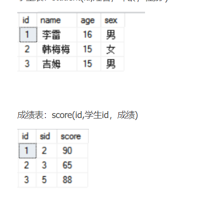
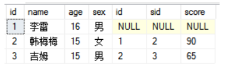
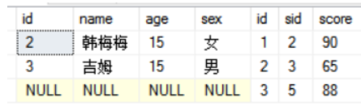
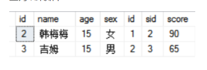
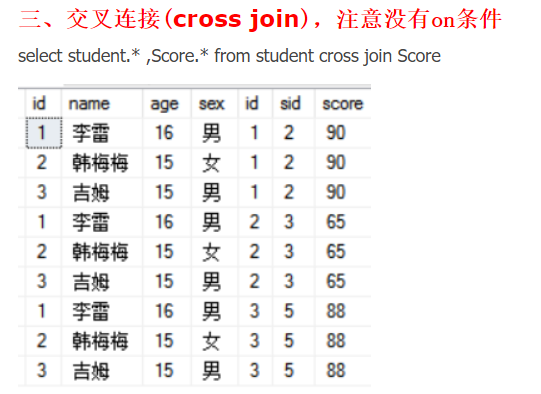

sql
SQL之增删改查
注: 用方括号括起来的内容表示可选,非必填, [可选项 ]
此外,在mysql中,若想用的名称已经有关键字占用了(如user) , 可用反引号包裹,来使用 , 例如: select * from `user`
增删改查(数据表)
insert插入数据
指定插入哪些字段(如果有主键,主键必须插入内容); 并且插入是支持多行插入的
语法：insert into 表名 [（列名1,列名2 ,…….）] values (数据列表) [ ,(数据列表)…. ]
假设存在一个学生表,有 sid ,name ,age,score 四个字段
1 | -- 插入多个学生信息,但不插入年龄 |
当需要插入全部字段时候,可以省略 (列名1, 列名2, 列名n…) ,但此时values 后面的数据列表顺序必须和表的结构一样
1 | -- 不指定插入字段,全部插入,注意! 插入的数据,数据列表必须对应表的结构(成绩不能写在年龄前面) |
删除数据
语法:delete from 表名 [where 定位条件]
若不写定位条件则将表中所有数据全部删除 !!!
where可以配合多种运算符使用:
如: or 逻辑或 , and 逻辑与 , like 匹配 ,in 多项目匹配 比较运算(> < != = )**
in运算符介绍: 字段 in(value1, value2, value3…) 相当于 字段 = value1 or 字段 = value2 or 字段 = value3 …..
1 | -- 删除学生表中,年龄大于22,并且学号小于1800的,或者成绩为 0 的学生 |
修改(更新)数据
语法：update 表名 set 列名 = 新值 [ , 列名 = 新值….] where 定位条件
1 | -- 将学号为1002的学生的成绩改为78 ,名字改为南枫 |
查找数据
语法: :select [top n 指定返回前n行] 列名1 [as 别名] [,列名2[ as 别名],….] from 表名 [ where 定位条件 ]
若不写 where 则查询所有数据行 ; 列名1[,列名2,….] 代表需要查询数据行的哪些字段, 若要查询所有字段, 可以 用 * 替代
1 | -- 查询学生表的所有信息 , 分号可写可不写 |
分页查询
可在查询语句后追加limit 关键字进行结果集分页
limit [starindex] pageSize
参数:starindex 代表从哪个索引开始分页,第一条数据行索引为0,不写此参数也为0,
参数:pageSize代表每页最多有多少条数据行, 必填项*
1 | -- -- 查询学生表中年龄大于18的,学生的姓名,成绩,并且从结果集的第5行为开始展示,每页展示10个人 |
条件(模糊)查询
where可以配合多种运算符使用:
如: or 逻辑或 , and 逻辑与 , like 匹配 ,in 多项目匹配 比较运算(> < != = )**
in运算符介绍: 字段 in(value1, value2, value3…) 相当于 字段 = value1 or 字段 = value2 or 字段 = value3 …
更多详细可查阅资源SQL| 菜鸟教程 (runoob.com)
==注意! ! !对于判断 null值==不过对于列值为null的，要用 is null 或 is not null
而不能用(!)=)
模糊查询(通配符使用)
模糊查询通常是 like 配合SQL 通配符使用
| 通配符 | 描述 |
|---|---|
| % | 替代 0 个或多个字符 |
| _ | 替代一个字符 |
| [charlist] | 字符列中的任何单一字符 |
| [^charlist] 或 [!charlist] | 不在字符列中的任何单一字符 |
1 | -- 查找学生表中所有姓张的学生 |
多表(链接)查询(join) <待写>
所谓多表查询,就是把多个表链接起来(通过主键外键)进行查询
让我们来回顾一下查询语句的语法格式,其实更官方一点应该是这样描述的
语法: select [top n 指定返回前n行] 列名1[,列名2,或者用* 表示所有的列] [可用 as 来起临时名]form 数据源 [ where 条件]
数据源?
在前面的例子中, 我们这里的数据源一般是只单张表, 其实这里的数据源也可以是多张表的,使用连接方式关键字将多张表建立链接关系从而查询到多张表的数据, 使用关键字 on 确定链接的条件
1 | select student.* ,Score.* from student inner join Score on student.id=Score.sid |
链接可分为:
外连接
- 左外连接(
left join或left outer join):左外连接包括left join左表所有行。假设左表中某行在右表没有匹配。则结果中相应行右表的部分所有为空(NULL). - 右外链接(
right join或right outer join) :右外连接包括right join右表所有行，假设左表中某行在右表没有匹配，则结果中相应左表的部分所有为空(NULL)。 - 全然外链接(
full join或full outer join) :全然外连接包括full join左右两表中所有的行，假设右表中某行在左表中没有匹配，则结果中相应行右表的部分所有为空(NULL)，假设左表中某行在右表中没有匹配，则结果中相应行左表的部分所有为空(NULL)。
- 左外连接(
内链接
join或inner join: 比较运算符，仅仅返回符合条件的行。交叉连接
cross join :叉联接也称作笛卡尔积。相当于两个表中的所有行进行排列组合。若表a有X行，表b有Y行，则将返回XY行记录。
链接方式图解:
假设有两表:

左外链接:

右外链接:

内连接:

交叉链接:
